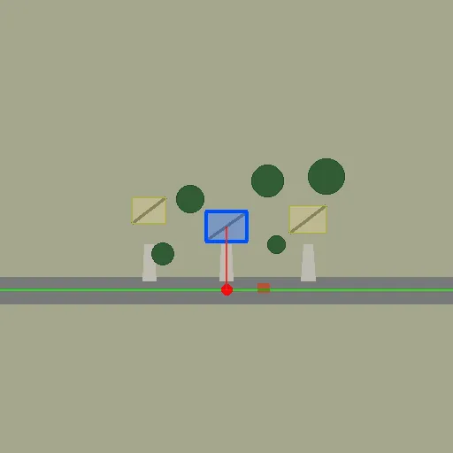
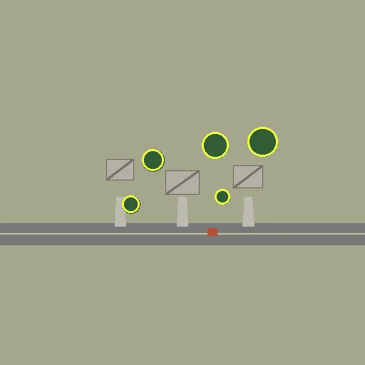
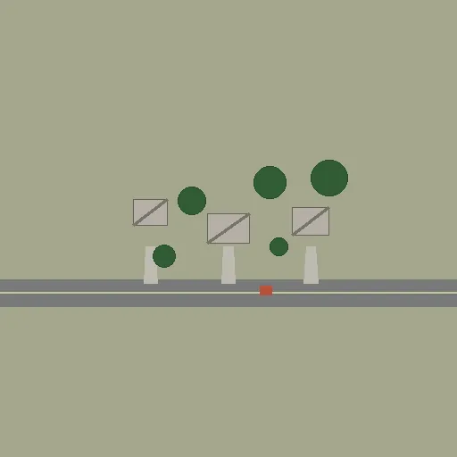
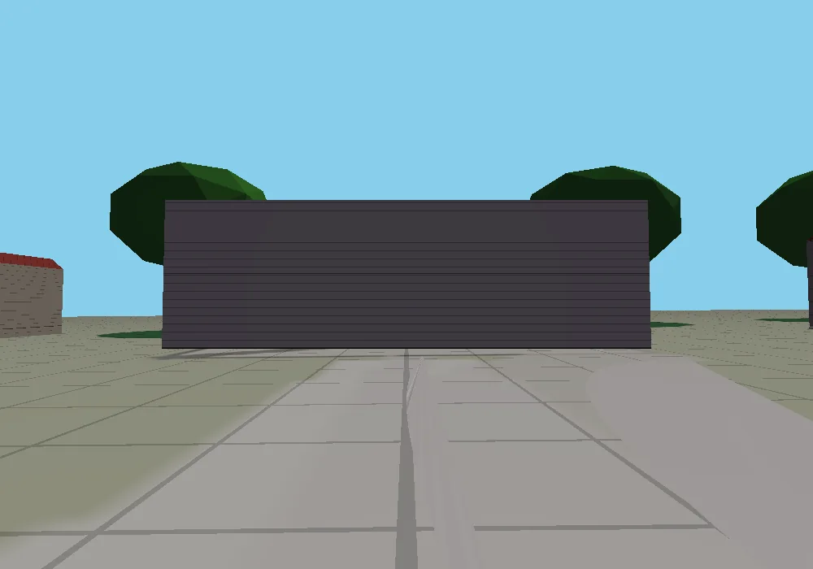
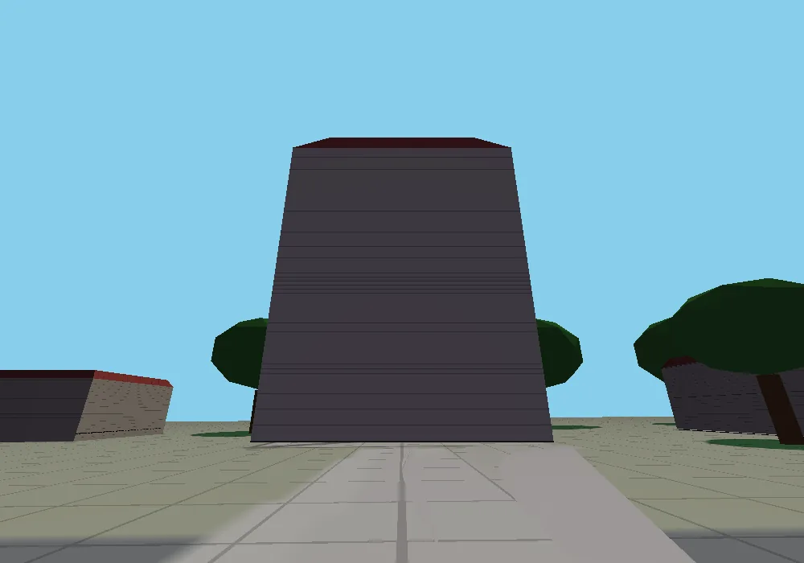
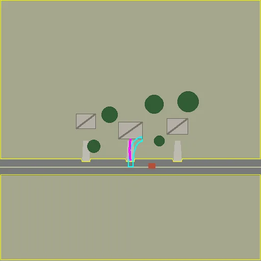
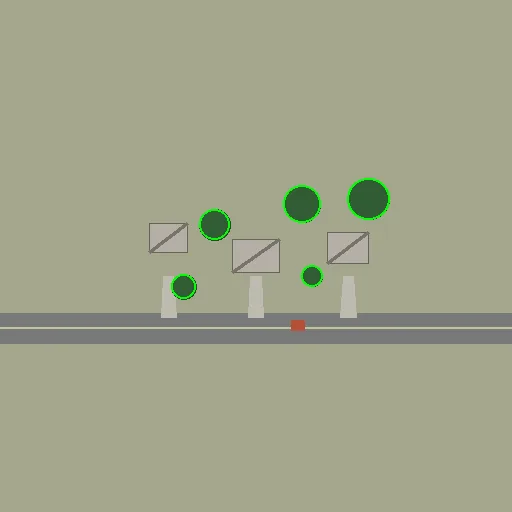
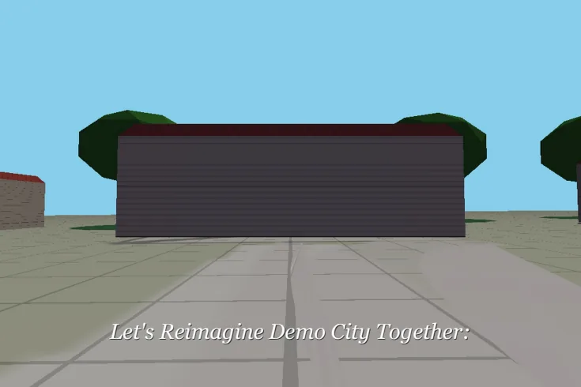
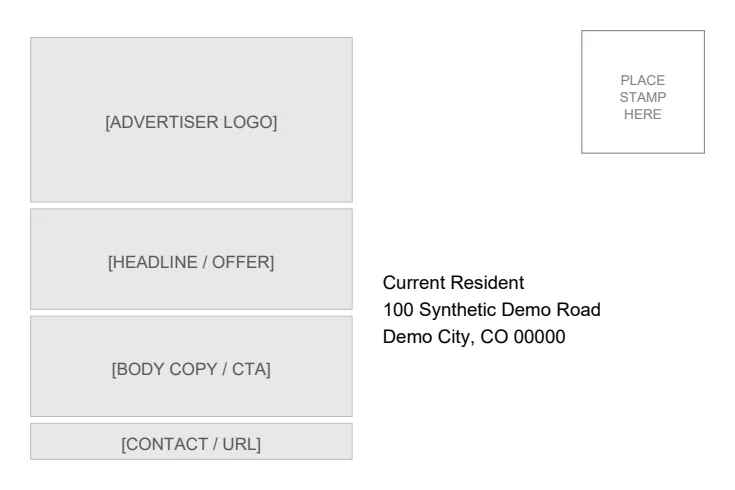
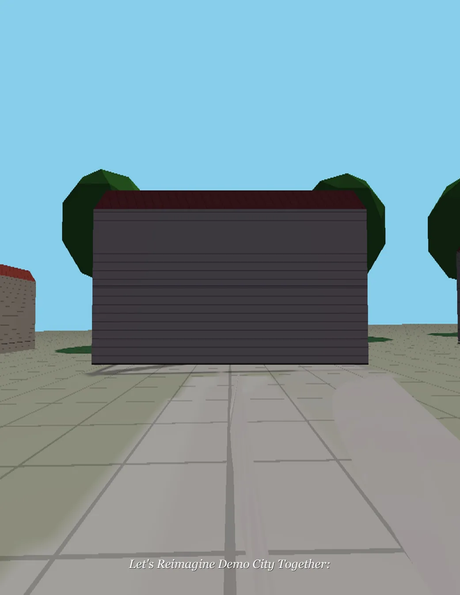

Deliberately drawn synthetic aerial diagram used as input.

Annotation output: target footprint, road, neighbor geometry and camera marker over the synthetic diagram.

HSV fallback detections on the synthetic diagram.

Registration output from a translated copy of the same synthetic diagram; no historical imagery was downloaded.All-stable map after synthetic alignment.ModernGL render of synthetic footprint/terrain with hip-roof input.ModernGL run with gable-roof input and the same synthetic neighborhood.

ModernGL flat-roof case using the same synthetic site.

Tall-building fixture exercising scene framing/clipping on synthetic terrain.Silhouette artifact generated alongside the 3D reference.Renderer driveway-mask artifact for the synthetic scene.

Renderer debug output exposing detected/inferred ground connections on the diagram.

Renderer tree-debug overlay.

First page of the actual 6-by-4-inch demo PDF.

Back of the actual 6-by-4-inch demo PDF, with dummy recipient and advertiser placeholders.

Portrait 8.5-by-11-inch PDF front, showing how the same synthetic 3D input is placed in another physical format.